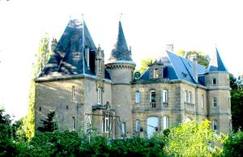
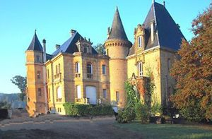
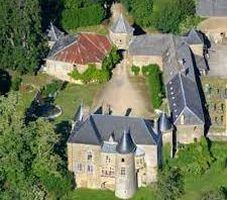
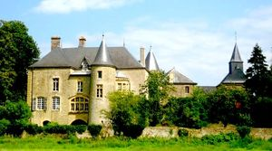
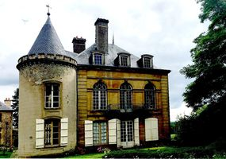
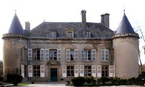

Recensement Jean-Claude Truffet
| Département | 08 — Ardennes |
| Canton | Sedan |
| Commune | Glaire |
| Type d'édifice | Château |
| Période d'origine | XVI-XVII |
| Coordonnées GPS | 49° 42' 42" Nord, 4° 54' 56" Est Vilette grav -4-5-6 GPS : 49° 42' 36,64" Nord, 4° 53' 53,97" Est |






Deux châteaux dans cet article , Bellevue et Vilette. BELLEVUE, situé à la sortie de Sedan pour se rendre à Glaire, le château, de style néoclassique qui rappelle les châteaux de la Renaissance, est édifié avec les belles pierres jaunes des carrières de Dom-le-Mesnil. Propriété de Louis Amour, frère du maire de Donchery, ce château du XIXe siècle est le lieu où, le 2 septembre 1870, que Napoléon III, assiégé à Sedan avec ses 83 000 hommes, va se rendre à Donchery où il rencontrera Bismarck. Puis il se rendra au château de Bellevue à Glaire, ou il rencontrera l'empereur Guillaume Ier d'Allemagne, où il signera l'acte de reddition de l'Armée Française. Le lendemain, les soldats français seront emmenés sur la presqu'île d'Iges de Glaire, qui s'étend sur plusieurs centaines d'hectares. lEmpereur devait attendre le roi Guillaume 1er, mais Bismarck, craignant une sorte dapitoiement de sa part, exigea que la capitulation soit signée avant son arrivée. Elle le fut à onze heures en présence du général de Wimpffen. Le roi de Prusse ne se rendit à Bellevue que vers deux heures de laprès-midi et eut avec Napoléon une entrevue dun quart dheure au cours de laquelle lempereur lui affirma navoir jamais voulu cette guerre et dont Guillaume Ier révéla plus tard quils étaient tous les deux fort émus. Le château a été découpé en plusieurs copropriétés à laube des années 1960, et un des propriétaires espère lui rendre tout son lustre dantan.
VILLETTE, un édifice est reconstruit dans les décennies suivantes, qui correspond aux trois travées de gauche de la façade principale actuelle, déjà flanquée de trois tours. Un vestibule central séparait deux grandes salles. En 1656 Mazarin fait l'acquisiion aux comtes de Rethel, s'y serait réfugié brièvement durant la fronde des princes. Les bâtiments sont aménagés une première fois au XVIIe siècle. ils sont acquis au XVIIIe siècle par Jean-François Maucomble, seigneur engagiste de Glaire (et père de Jean-François Nicolas Joseph Maucomble, général sous l'Empire et la Restauration. Ce Maucomble donne au bâtiment sa forme actuelle, pour l'essentiel. Il fait construire le pavillon au Nord, faisant saillie, agrandit et homogénéise la façade principale, revoit les ouvertures et aménage un jardin. Pendant la Révolution Française, et particulièrement pendant les années de terreur puis à la fin de sa vie, la famille Maucomble héberge discrètement en ce lieu l'évêque constitutionnel du diocèse de Sedan, Nicolas Philbert. Il y meurt en Juin 1797. Conformément à ses volontés, on l'enterre dans le cimetière de la petite église. Le fait est noté par quelques historiens et archivistes locaux qui mentionnent notamment l'inscription laissée par ses Vicaires sur une plaque de marbre. En 1982, toutefois, des travaux d'évacuation des eaux de pluie mettent au jour la fameuse plaque de marbre et la sépulture, sous vingt centimètres de terre, au pied du mur du cimetière, face à l'entrée de l'église. Une nouvelle inhumation est effectuée et le curé de Glaire lui apporte une ultime bénédiction. En 1990 le château est acquit par M. Albert Caprani. Au XIXe siècle, l'édifice devient la propriété de négociants en laine de Sedan, les Kistemann qui procèdent à de nouveaux remaniements, notamment sur la façade arrière.
Vilette Famille Jean-François Maucomble"
Deux châteaux dans cet article , Bellevue et Vilette. Bellevue Grav-1-2-3 GPS : 49° 42' 42" Nord, 4° 54' 56" Est Vilette grav -4-5-6 GPS : 49° 42' 36,64" Nord, 4° 53' 53,97" Est